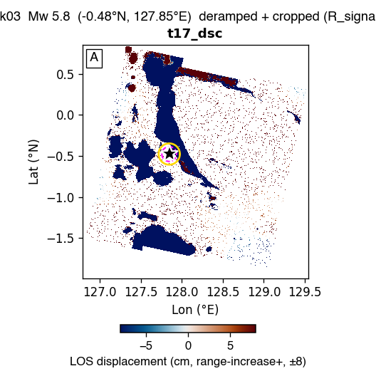

us70004k03 — Mw 5.8 — GBIS report
Event: 138 km SSE of Sofifi, Indonesia · (-0.477°N, 127.848°E, depth 10.0 km)
USGS NP1: strike 28.4° / dip 35.3° / rake -98.5°
USGS NP2: strike 218.8° / dip 55.1° / rake -84.0°
Status: ESCALATED at stage 4 — prep_no_tracks. Sections below show whatever the pipeline produced before it stopped; the rest are left blank. See §3 / escalation.md.
1. Raw observations (deramped + cropped)

2. Two-round iterative downsampling (Pass-1 zoned → Pass-2 synth-quadtree)
No subsample_v9_zoned.mat found — run Stage 4 (qsRunFullEvent) first.
3. GBIS inversion result — posterior + diagnostics
⏳ Pending — GBIS MCMC not yet complete. Re-run after qsRunFullEvent finishes.
4. Beachball comparison
⏳ Not generated — needs the full-mode figure helper. the beachball (full-mode figure helper).
5. Triplet — data / model / residual
⏳ Not generated — needs the full-mode figure helper. the data/model/residual triplet (full-mode figure helper).
6. Joint-posterior corner plot
⏳ Not generated — needs the full-mode figure helper. the corner plot (full-mode figure helper).
7. Burn-in / chain trace
⏳ Not generated — needs the full-mode figure helper. the chain trace (full-mode figure helper).